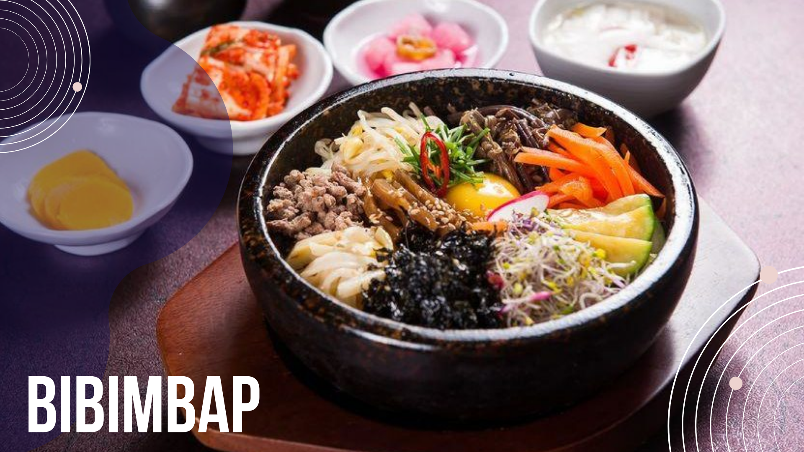

Bibimbap

Description
Bibimbap, the ultimate comfort food!
Bibimbap (비빔밥) is probably one of the most well-known and beloved Korean dishes to many people. Even if people don't know anything about Korea, it's not too difficult to find people who had bibimbap sometime in their lives.
Ingredients For Bibimbap (Serves 3 to 4)
MEAT AND MEAT SAUCE
- 100g / 3.5 ounces beef
- 1 Tbsp soy sauce
- 1 Tbsp sesame oil
- 1 tsp brown sugar
- 1/4 tsp minced garlic
VEGETABLES AND OTHERS
- 250g (0.6 pounds) seasoned spinach
- 1 Tbsp soy sauce seasoned bean sprouts
- 100g (3.5 ounces) shiitake mushroom
- 120g (4.2 ounces) carrots (1 small)
- 1/2 tsp fine sea salt (1/4 tsp each will be used when cooking shiitake mushroom and carrots)
- 3 to 4 serving portions of steamed rice
- 3 or 4 eggs (depending on the serving portion)
- Some cooking oil to cook the meat, mushroom, carrots and eggs – I used rice bran oil.
- Some toasted seasoned seaweed, shredded (long thing cut)
BIBIMBAP SAUCE
- 2 Tbsp gochujang
- 1 Tbsp sesame oil
- 1 Tbsp sugar
- 1 Tbsp water
- 1 Tbsp roasted sesame seeds
- 1 tsp vinegar
- 1 tsp minced garlic
HOW TO MAKE BIBIMBAP
- Prepare the cook ingredients as below
- Put the rice into a bowl and add the meat, assorted vegetables, seasoned seaweed, bibimbap sauce, and the egg on top of the rice. Serve.
- To eat, mix the ingredients in the bowl, and enjoy!